PUBLISHED ON GOOGLE PLAY
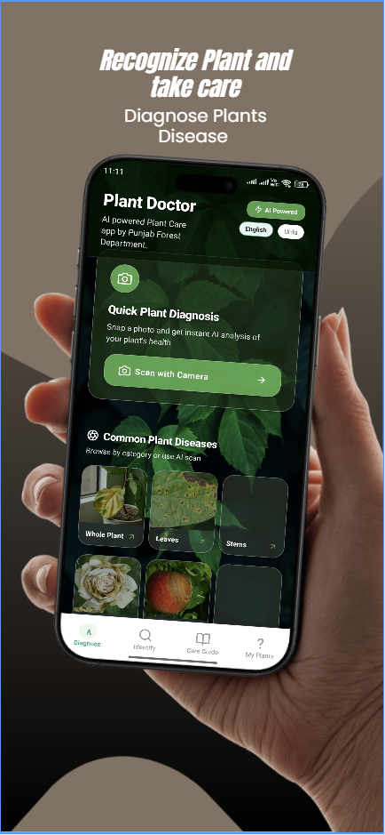
Official store artworkCM AI Plant Doctor
Photo-based plant identification, disease detection, and care guidance — with English and Urdu support.
OPEN TO PROJECTS & COLLABORATIONS
FAISALABAD, PKHELLO, WORLD. I’M
Mobile App DeveloperAndroid · Applied AI · Computer Vision
I turn complex ideas into mobile experiences people can use. From AI-powered plant care to government field systems, I build apps that connect the digital world with the real one.
Mobile App Development
Punjab Forest Department
A few tools in my toolkit
01 / BUILT & PUBLISHED
15 live apps. Six featured stories.
Pick a project and take a closer look.
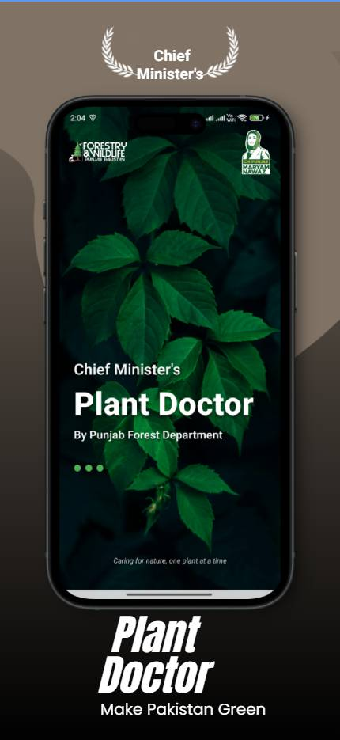
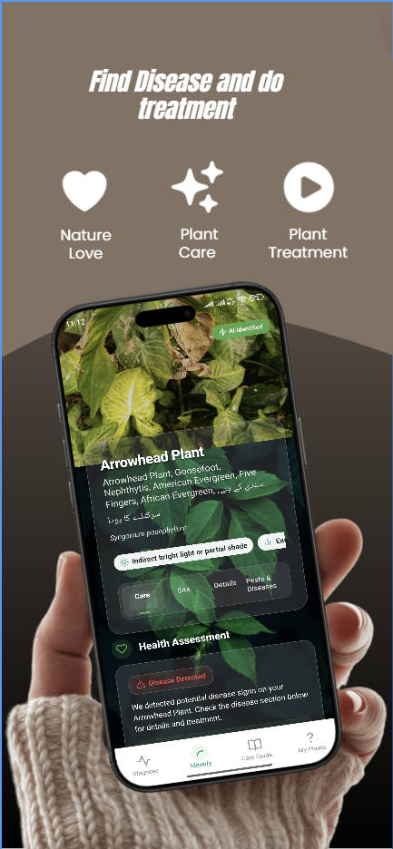
APPLIED AI / PLANT CARE
What if better plant care started with a photo?
Photo-based plant identification, potential disease detection, and practical care guidance, with English and Urdu support.
Live on Google PlayPUBLISHED BY FORESTRY & WILDLIFE DEPARTMENT PUNJAB
02 / PROJECT ARCHIVE
Published apps, practical AI, and the systems
I’ve helped bring to life.

Official store artworkPhoto-based plant identification, disease detection, and care guidance — with English and Urdu support.
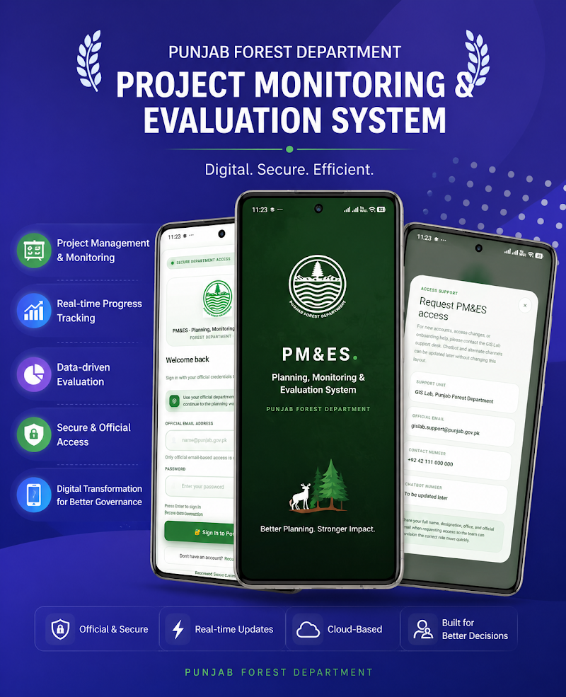
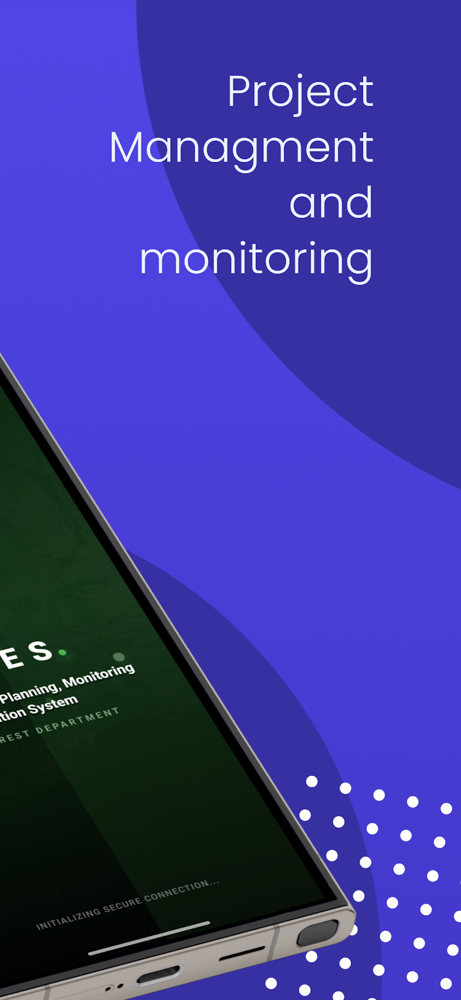
Official store artwork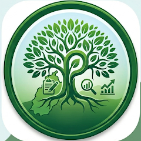
A connected platform for project oversight, live field updates, centralized records, and structured evaluation.
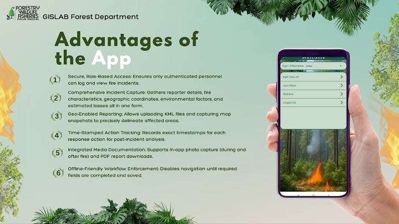
Official store artwork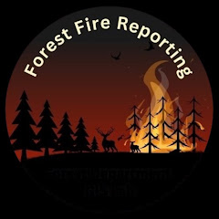
Field reporting with geographic boundaries, photo evidence, response logs, and downloadable incident reports.
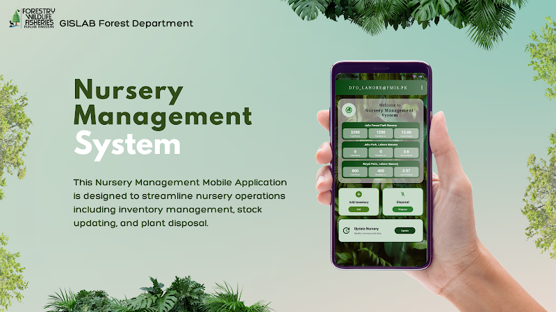
Official store artwork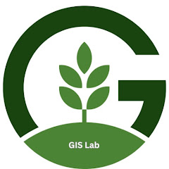
Nursery inventory, plant transfers, and disposal records in one mobile workflow, supported by photos and documents.
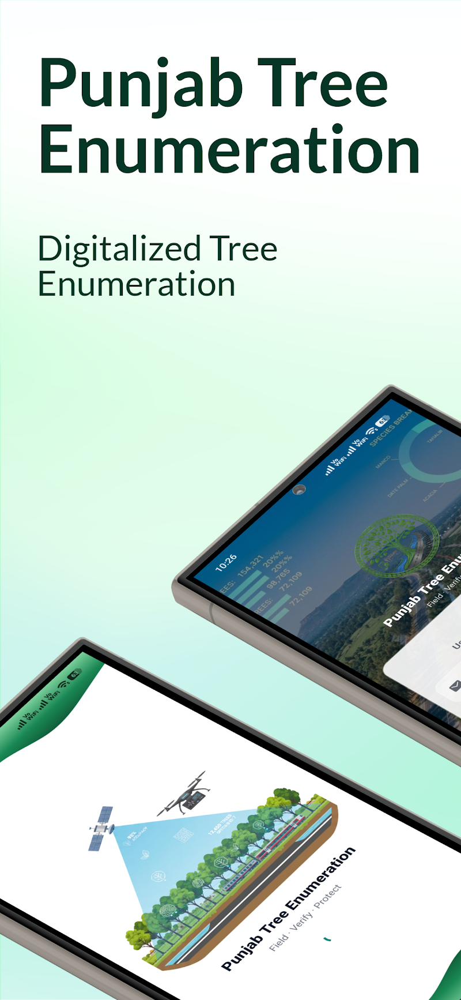
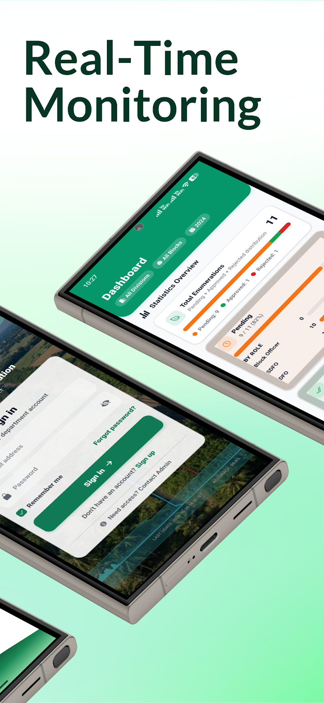
Official store artwork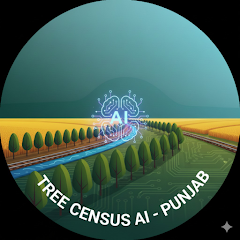
GPS-enabled tree surveys along roads, canals, and railway corridors, with measurements, condition records, and supervisory review.
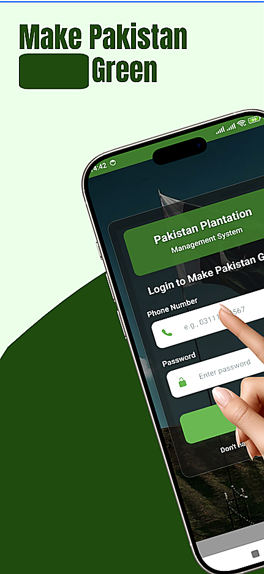
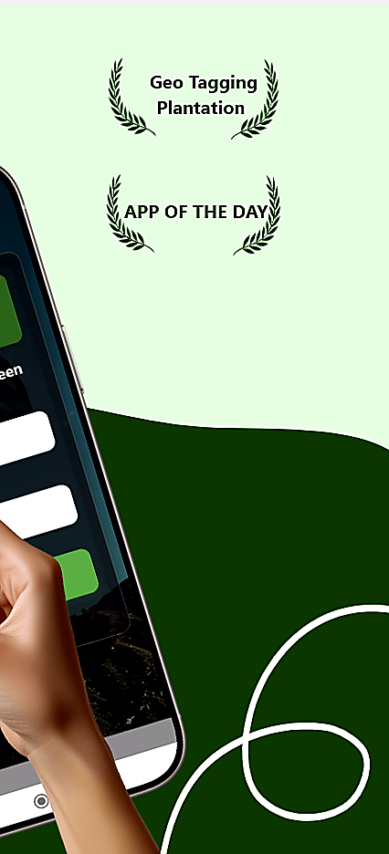
Official store artworkGeo-tagged plantation records, photographic evidence, QR access, and growth follow-ups for public and departmental users.
Your care.
In one place.
Web and mobile development for Doconline, working remotely with a team in Italy.
A real-time camera system for face mask detection and social distance monitoring, built during COVID-19.
MORE FROM MY PUBLISHED WORK
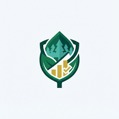
Offline project inspections, item-level remarks, and manual synchronization for authorized forestry officers.
GOOGLE PLAY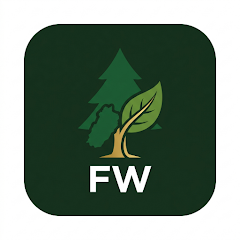
Secure mobile access to departmental dashboards, reports, and connected forest-management systems.
GOOGLE PLAY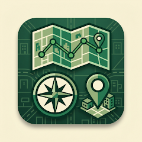
A searchable gateway to forestry portals, with category filters and separate system sessions.
GOOGLE PLAYComplaint registration, dispatch, evidence uploads, officer responses, and status tracking.
GOOGLE PLAY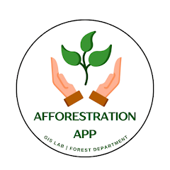
GIS-based plantation planning, boundary mapping, species records, and annual maintenance tracking.
GOOGLE PLAYForest and wildlife destinations, tour lodges, maps, and visitor information in one app.
GOOGLE PLAY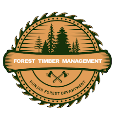
Tree and log records, felling workflows, depot receiving, auctions, and QR-based traceability.
GOOGLE PLAY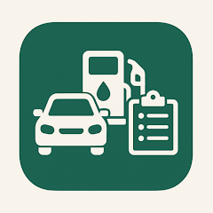
Fuel records, official trip logs, and vehicle activity for departmental fleet oversight.
GOOGLE PLAY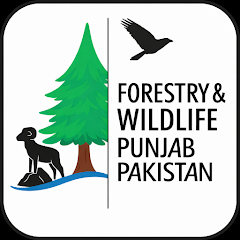
Role-based forestry dashboards for complaints, fire incidents, and nursery stock insights.
GOOGLE PLAY15 apps listed in the Pakistan Google Play view. Availability can vary by country; some apps require an authorized departmental account.
Published app artwork comes from the linked Google Play listings. Doconline and mask-detection visuals are concept illustrations.
03 / AI & COMPUTER VISION
From plant recognition to document intelligence.
More ways to make software work for people.
Already in my work: AI plant identification and care in CM AI Plant Doctor ↗, plus real-time mask and social distance detection.
Six project directions to explore together, building on my mobile and computer vision experience.
A mobile scanner that turns forms, receipts, and reports into searchable, structured information.
An image inspection workflow for flagging visible damage, defects, or changes before a human review.
A camera-based concept for counting objects and understanding movement in a defined scene.
An assistant that helps people find answers in a business’s documents and guides, with source references.
A voice-enabled mobile workflow for turning dictated notes into readable records and follow-up tasks.
A field-monitoring concept combining geo-tagged photos with image analysis to help teams review site changes.
Mobile App Developer · AI & Computer Vision
04 / THE PERSON BEHIND THE CODE
I’m Hassan, a mobile app developer based in Faisalabad, Pakistan, with 5+ years of experience. I turn complicated workflows into tools that feel natural in your hand.
My work has taken me from Android apps at Appinators to healthcare with Doconline in Italy and field applications for the Punjab Forest Department. I’ve also taught Android development, which keeps me thinking about how to make complex things clearer.
My recent work includes published forestry applications and CM AI Plant Doctor. I’m also exploring React Native and new ways to bring practical AI and computer vision into mobile experiences.
BS Computer Science · Government College University Faisalabad, 2016–2020.
Machine Learning with Python · Cognitiveclass.ai / IBM.
Machine Learning & Python Programming · Technet Pakistan.
05 / WHAT I BRING TO THE TABLE
Thoughtful interfaces on the outside.
Solid engineering underneath.
Native Android applications with clean architecture and careful attention to the way people actually use them.
APIs, authentication, cloud storage, and backend integrations that bring the whole app experience together.
Applied AI for mobile experiences, with published plant-care work and a computer vision project in mask and distance detection.